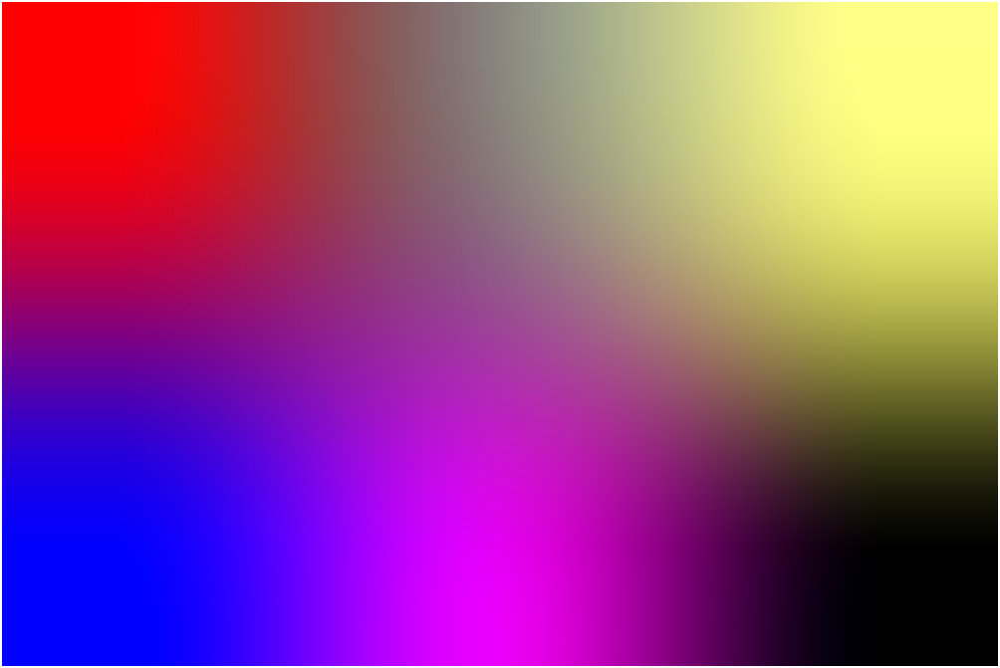
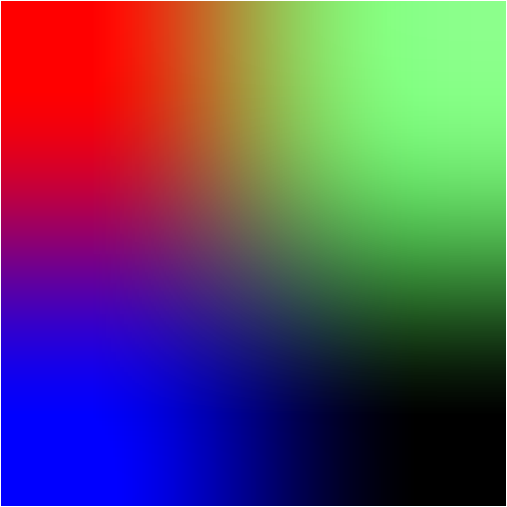
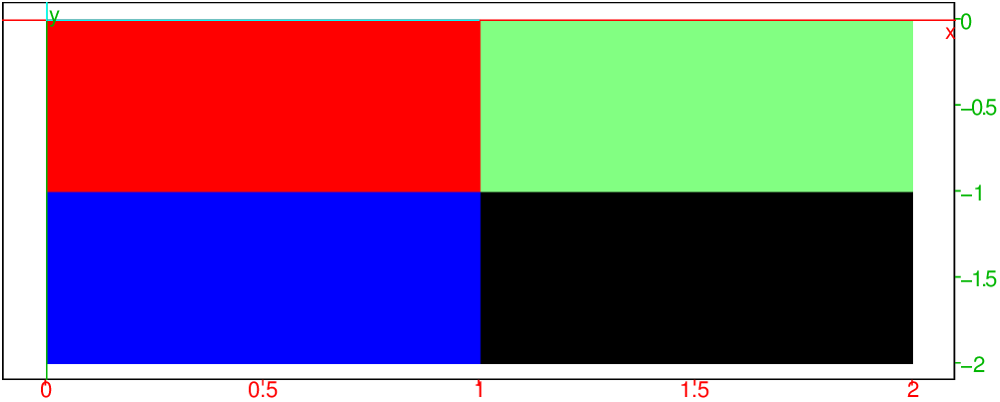

On posséde une variable (par exemple a) contenant une image lue
avec readrgb.
writergb a deux arguments : le nom du fichier dans lequel on veut stocker
la nouvelle image et une liste contenant a[0] (liste contenant le nombre
de canaux et les dimensions de la matrice des pixels de cette image), puis les
couleurs de cette image qui sont les matrices a[1] pour la couleur rouge,
a[2] pour la couleur verte, a[3] pour la transparence et a[4]
pour la couleur bleu.
La transparence permet de superposer plusieurs images : sa valeur va de 0 à
255 (si la transparence vaut 0 c’est un cache !).
On tape pour créer une image avec Xcas :
affichage(rectangle(0,100,1/4),1+rempli);
affichage(rectangle(100,200,1/4),2+rempli);
affichage(rectangle(25*i,100+25*i,1/4),3+rempli);
affichage(rectangle(100+25*i,200+25*i,1/4),4+rempli)
On obtient :

On sauve cette image (bouton M situé à gauche) sous le nom
image1234, ce qui crèe :
image1234.eps, image1234.jpg, image1234.png,
image1234.pdf.
On tape :
a:=readrgb("image1234.jpg")
a[0]
On obtient : [4,363,908]
Puis on tape :
writergb("image2134.png",[a[0],a[2],a[1],a[3],a[4]])
On obtient (le rouge est devenu vert et le vert est devenu rouge) :

Ou on tape dans un terminal :
gimp "image2134.png"
On obtient :
l’image de départ dans laquelle le rouge est devenu vert et le vert est devenu rouge
Essayer de crèer une image :
writergb("essai1.png",[[4,2,2],[[255,0],[0,0]], [[0,255],[0,0]],[[255,125],[255,255]], [[0,0],[255,0]]])
vous obtenez (avec un vert attenué du au 125 de la 3ième matrice):

ou encore essayer :
writergb("image1.png",[[4,2,3],[[255,0,255],[0,255,0]], [[0,0,255],[0,0,0]],[[255,125,125],[255,255,255]], [[0,0,0],[255,255,0]]])
On peut aussi créer et stocker des images, au format PNG avec une
version simplifiée de la syntaxe : pas d’argument correspondant au nombre
de canaux et aux dimensions de la matrice des pixels de cette image ni de
matrice correspondant à la transparence.
writergb a alors deux ou quatre arguments : le nom du fichier dans lequel
on veut stocker la nouvelle image et la matrice des niveaux de gris des pixels,
ou 3 matrices (du rouge, du vert et du bleu) donnant la couleur RGB des
pixels.
Par exemple :
writergb("image2.png",[[65,125],[185,200]])
crée et affiche une image 2x2 pixels au format PNG en 4 niveaux de gris
(0 noir, 255 blanc)
writergb("image3.png",[[255,250],[0,120]],[[0,255],[0,0]], [[0,0],[255,100]])
crée et affiche une image 2x2 pixels au format PNG en RGBA avec 256 niveaux
pour chaque couleur (rouge, bleu, vert). Ici la première ligne rouge, jaune
(mélange de rouge (240) et vert (255)) et la deuxième ligne est bleu,violet (mélange de rouge(120) et de bleu (100)).
Essayez :
writergb("essai2.png",[[4,300,300],makemat(0,300,300), makemat(0,300,300), makemat(255,300,300), makemat(0,300,300)+idn(300)*255])
writergb("essai3.png",[[4,300,300],makemat(250,100,100)+ranm(100,100), makemat(0,100,100)+ranm(100,100), makemat(255,100,100), makemat(0,100,100)+ranm(100,100)])
Remarque
Il y a 2 choses distinctes: le nombre de points de l’image numerisée et la
représentation graphique dans Xcas qui se fait dans un rectangle avec
des coordonnées. Dans [4,300,100] il y a 300 points horizontalement et 100
verticalement, si on met l’image dans un rectangle du plan, selon l’echelle
choisie pour le graphique horizontalement et verticalement, l’image 300x100
peut être toute petite ou très grande. Si c’est tres grand chaque point de
l’image numerisée originale sera représenté par un petit rectangle qui
occupera plusieurs pixels physiques sur l’écran.